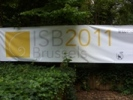
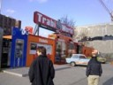

Events
Next group seminar:
Speaker: Mr. Alisdair MacLeod
Title: "Axial compression tests of plated bone: A numerical study to investigate the effect of loading conditions on the mechanical response."
- Date: 14th of December
- Time: 3pm.
- Location: Anatomy Lecture Theatre, Anatomy Department, Old Medical School Teviot Place. Map
Previous group seminar:
Speaker: Mr. Alberto Cuadrado
Title: "Screw locking elements and how they can be made suitable for osteoporotic fractures."
- Date: 16th of November
- Time: 3pm.
- Location: Seminar room 2, The Chancellor's Building, 49 Little France Crescent, Edinburgh EH16 4SB. Map
Recent conferences attended by the group:
- The 18th Congress of the European Society of Biomechanics (ESB2012), Lisbon, Portugal.
- The 10th International Symposium on Biomechanics and Biomedical Engineering (CMBBE 2012), Berlin, Germany.
- The 23rd Congress of the International Society of Biomechanics (ISB 2011), Brussels, Belgium.
- The 3rd Joint meeting of the Bone Research Society and the British Orthopaedic Research Society (BRSBORS 2011), Cambridge, UK.
Gallery
A selection of photos from recent events and conferences
Brussels (ISB 2011) |
Berlin (CMBBE 2012) |
|
|  |  |


{kind=link}
{kind=link}
{kind=link}
{kind=link}
{kind=link}
{kind=link}
{kind=link}
{kind=link}
{kind=link}